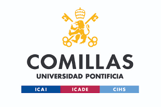

<!DOCTYPE html>
<html lang="es">
<head>
    <meta charset="UTF-8">
    <link href="https://fonts.googleapis.com/css2?family=Inter:wght@300;400;600;800&display=swap" rel="stylesheet">
    <style>
        * { margin: 0; padding: 0; box-sizing: border-box; }
        body {
            font-family: 'Inter', sans-serif;
            background-color: #f1f5f9;
            color: #64748b;
            line-height: 1.6;
        }
        footer {
            text-align: center;
            padding: 2.5rem 2rem;
            font-size: 0.875rem;
            border-top: 1px solid #e2e8f0;
            background-color: #f1f5f9;
            display: flex;
            flex-direction: column;
            align-items: center;
            gap: 1rem;
        }
        .footer-logo {
            max-height: 70px;
            width: auto;
            object-fit: contain;
            opacity: 0.85;
            transition: opacity 0.3s ease;
        }
        .footer-logo:hover {
            opacity: 1;
        }
        footer p {
            color: #94a3b8;
        }
    </style>
</head>
<body>
    <footer>
        
        <p>&copy; 2026 Portafolio de Educación y Deporte. Diseñado para mostrar el aprendizaje e impacto de la actividad física.</p>
    </footer>
</body>
</html>
